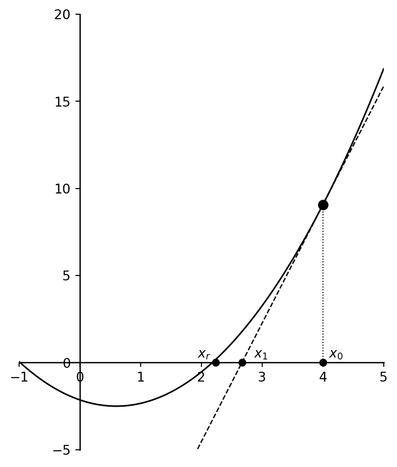
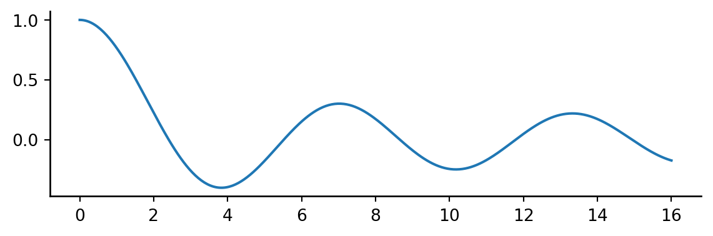
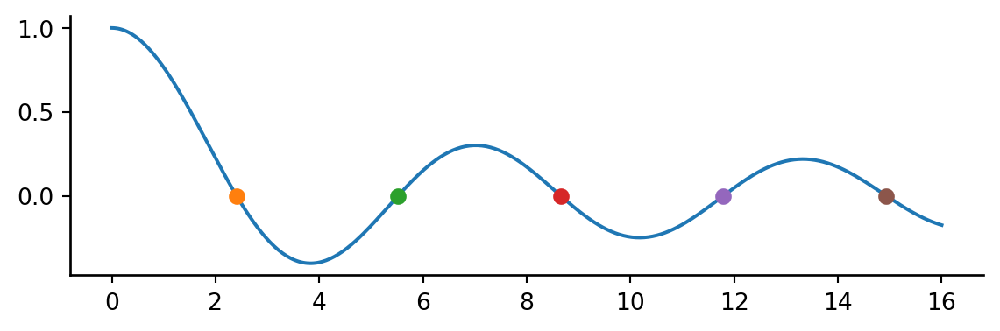

2 Finding the Root of a Function
The need to determine the roots of a function – i.e. where that function crosses the x-axis – is a recurring problem in practical and computational physics. For example, the density of matter in the interior of a star may be approximately represented by a type of function called a polytropic function. The edge or surface of the star occurs where the appropriate polytropic function goes to zero. There are many other examples. All of you know how to find analytically the roots of a parabola. For more complex functions, it may not be possible or easy to find the roots analytically, and so it is necessary to use numerical methods. The numerical method that is used depends upon whether or not it is possible to determine the derivative of the function. The function, for instance, may be given to us as a “black box” – it may be in tabular form, or given to us as a “C” function, or it may be known only through a recursion equation. In such a case, the appropriate method would be to more and more closely bracket the root until we know it to the precision that we desire. Alternately, we may be able to differentiate the function. In that case, we can use the Newton-Raphson method (or similar methods) to zero in on the root.
2.1 The Method of Bracketing and Bisection
The first thing that we need to know in root-finding is an approximate location of the root we are interested in. How can we determine this? The easiest way is to use a plotting program, such as gnuplot, EXCEL, etc., to plot the function. Another way is to calculate the function at a number of points. Then, unless the function is pathological in some way, we can say that a root exists in the interval \((a, b)\) if \(f(a)\) and \(f(b)\) have opposite signs. An exception to this is a function with a singularity in this interval. Suppose \(c\) is in the interval \((a, b)\), and the function is given by \[
f(x) = \frac{1}{x - c}
\] Then, \(f(x)\) has a singularity at \(c\) and not a root. There are other pathological functions such as \(\sin(1/x)\), which has infinitely many roots in the vicinity of \(x = 0\). So, the user must be aware of such problems, as such pathologies will give problems to even the most clever programs.
Let us assume that our function is fairly free of pathologies and that we know that there is a root in the interval \((a, b)\) and that we want to find it more exactly.
The simplest way to proceed is using the method of bisection. This method is straightforward. If we know that a root is in \((a, b)\) because \(f(a)\) has a different sign from \(f(b)\), then evaluate the function \(f\) at the midpoint of the interval, \((a + b)/2\), and examine its sign. Replace whichever limit (e.g. \(a\) or \(b\)) that has the same sign. Repeat the process until the interval is so small that we know the location of the root to the desired accuracy.
The “desired” accuracy must be within limits. As we have discussed before in class and lab, since computers use a fixed number of binary digits to represent floating-point numbers, there is a limit to the accuracy with which computers can represent numbers. To be precise, the smallest floating-point number which, when added to the floating-point number \(1.0\), produces a floating-point number different from \(1.0\), is termed the machine accuracy, \(\epsilon_m\). Using single precision, most machines have \(\epsilon_m \approx 1 \times 10^{-8}\). Using double precision, \(\epsilon_m \approx 1 \times 10^{-16}\). It is always a good idea to back off from these numbers, and thus setting \(\epsilon_m\) to \(10^{-6}\) and \(10^{-14}\) respectively are practical limits. Sometimes even those limits are too optimistic. Let us suppose that our \((n - 1)^{\text{th}}\) and \(n^{\text{th}}\) evaluations of the midpoint are \(x_{n-1}\) and \(x_n\), and that the root was initially in the interval \((a, b)\). We would then be justified in stopping our search if \(|x_n - x_{n-1}| < \epsilon_m |b - a|\).
NoteExercise 5.1
The polynomial \(f(x) = 5x^2 + 9x - 80\) has a root in the interval \((3, 4)\). Find the root to a precision of \(10^{-6}\) using the bisection method. Verify your root analytically.
Plotting Functions in gnuplot
When finding roots, it is a good idea to plot the function to get an idea of the position of the roots. This can be done in gnuplot. To plot the function of Exercise 5.1, enter the following commands:
gnuplot> f(x) = 5*x**2 + 9*x - 80
gnuplot> plot f(x)
gnuplot> g(x) = 0
gnuplot> replot g(x)Note that exponentiation in gnuplot is accomplished with “**”. Notice in the plot that \(f(x)\) has a root at about -5 and another between 3 and 4.
NoteExercise 5.2
Bessel functions \(J_0(x)\), \(J_1(x)\), etc. often turn up in mathematical physics, especially in the context of optics and diffraction. The file comphys.c has a canned version of the Bessel function \(J_0(x)\). The function declaration (contained in the file comphys.h) for this function is
float bessj0(float x)Modify your program from Exercise 5.1 to find the first two positive roots of \(J_0(x)\).
NoteExercise 5.3
The viscosity of air (in micropascal seconds) is given to good accuracy by the following polynomial (valid between \(T = 100\,\text{K}\) and \(600\,\text{K}\)):
\[ \eta = 3.61111 \times 10^{-8} T^3 - 6.95238 \times 10^{-5} T^2 + 0.0805437\,T - 0.3 \]
Use this polynomial to find the temperature \(T\) at which \(\eta = 20.1\,\mu\text{Pa}\cdot\text{s}\).
NoteExercise 5.4
An atomic state decays with two time constants \(\tau_1\) and \(\tau_2\) and can be described by the equation:
\[ N = \frac{N_0}{2} \left( e^{-t/\tau_1} + e^{-t/\tau_2} \right) \]
Find, by the method of bisection, the time at which \(N = N_0 / 2\), i.e., the half-life of the state. Let \(\tau_1 = 5.697\) and \(\tau_2 = 9.446\). The program should first display (with gnuplot) the function (use \(N_0 = 100.0\)) and then prompt the user for an initial bracket. Hints: gnuplot does not recognize the variable t, so use x instead. You may wish to add the command set xrange [0:15] just before the plot f(x) command to give the plot a nice scaling. Use exp(x) for \(e^x\) in gnuplot.
2.2 The Newton-Raphson Method
If we can calculate the first derivative of our function, then we can use a speedier (although somewhat more dangerous) method called the Newton-Raphson method.
Let us suppose that we have a function as illustrated below, which has a root at \(x = x_r\), and that we have a rough estimate for that root of \(x = x_0\). Let us evaluate the derivative of this function at \(x_0\), \(f'(x_0)\). This derivative will be the slope of the tangent line to the function at the point \((x_0, f(x_0))\), and you can see that where it crosses the \(x\)-axis, \(x_1\), is a much better estimate to the root of the function than \(x_0\).
The process can be repeated to give an even better estimate, and so on. The equation of the first tangent line is (the student should verify):
\[ y = f'(x_0)(x - x_0) + f(x_0) \]
If we set \(y = 0\) to find the root of this line, we get
\[ x_1 = x_0 - \frac{f(x_0)}{f'(x_0)} \]
From this, we can derive the Newton–Raphson formula for the \(n^{\text{th}}\) estimate of the root: \[ x_n = x_{n-1} - \frac{f(x_{n-1})}{f'(x_{n-1})} \]
NoteExercise 5.5
Write a program to find the root for the polynomial of Exercise 5.1 using the Newton–Raphson method. Begin with an estimate \(x_0 = 4\). See what happens if you use a different starting point. Explore both positive and negative values for the starting point.
NoteExercise 5.6
Write a program to solve the problem of Exercise 5.3 using the Newton–Raphson method. Begin with an estimate of \(200\,\text{K}\).
NoteExercise 5.7
Write a program to solve the problem of Exercise 5.4 using the Newton–Raphson method.
An obvious danger to the Newton-Raphson method is that if there is a minimum or a maximum between the root and your starting point, the method will either not converge to the desired root at all, but to another one, or wander out to ±∞ at an ever accelerating pace. In addition, if you happen by bad luck to choose your beginning point at a maximum or minimum point, your program will never converge, but will blow up! Hence, as always, you should have a pretty good idea of the nature of your function before you attempt to find and “polish” roots.
NoteExercise 5.8
Use the fact that
\[ \frac{dJ_0(x)}{dx} = -J_1(x) \]
to calculate the first two roots of \(J_0(x)\).
The code for \(J_1(x)\) is in the file comphys.c, and the function definition is
float bessj1(float x);which is contained in comphys.h.
NoteExercise 5.9 An Iterative Problem
In ballistics, it is common to solve the equations of motion of a particle shot at an angle, \(\theta\), above a horizontal surface with an initial velocity \(v_0\). The effects of air resistance play an important role that is often neglected in introductory or intermediate coursework. If the force of air resistance can be modeled as:
\[ F_x = -k m \dot{x} \tag{1} \]
\[ F_y = -k m \dot{y} \tag{2} \]
then the \(x(t)\) and \(y(t)\) solutions are:
\[ x(t) = \frac{v_0 \cos \theta}{k} \left( 1 - e^{-k t} \right) \tag{3} \]
\[ y(t) = - \frac{gt}{k} + \frac{k v_0 \sin \theta + g}{k^2} \left( 1 - e^{-k t} \right) \tag{4} \]
The time of flight of the projectile (the time elapsed before the projectile lands) is given as:
\[ T = \frac{v_0 \sin \theta + g}{gk} \left( 1 - e^{-k T} \right) \tag{5} \]
Notice that \(T\) appears on both sides of equation (5). This is known as a “transcendental equation” which can be solved numerically using iteration. Note that this equation collapses to the simple expression for \(T\) when resistance is neglected (\(k = 0\)):
\[ T(k=0) = \frac{2 v_0 \sin \theta}{g} \tag{6} \]
The range of motion (the distance traveled by the projectile before landing) is:
\[ R = x(t = T) \tag{7} \]
In the exercises below, use \(\theta = 60^\circ\), \(v_0 = 600 \, \text{m/s}\), and \(|g| = 9.8 \, \text{m/s}^2\).
Solve for \(T\) (equation 5) numerically using iteration. In the first iteration, use the non-resistive expression for \(T\) (equation 6). Iterate until the solution converges to within a user-defined tolerance (error) – e.g., \(\Delta T\) over successive iterations is less than the tolerance. Use a value of \(k = 0.005\) for this part only.
Find the value of \(k\) that allows the projectile to travel 1500 meters (\(R = 1500\,\text{m}\)).
[GRAD STUDENTS ONLY] Plot \(y\) vs. \(x\) using gnuplot for \(k\) values of 0.0, 0.005, 0.01, 0.02, 0.04, and 0.08. Also, show analytically how to get equation (6) from equation (5) (Hint: Use perturbation methods – i.e., expand \(1 - e^{-kT}\) in a power series expansion, and keep only the first few terms).
2.3 Root Finding in Python
In SciPy all of the root finding methods are in the optimize subpackage.
To show off how it is done consider this suspiciously familiar function
import numpy as np
from scipy.special import j0
import matplotlib.pyplot as plt
plt.rcParams.update({
'figure.figsize': (7, 2),
'axes.spines.top': False,
'axes.spines.right': False
})
x = np.linspace(0, 16, 400)
fig, ax = plt.subplots()
ax.plot(x, j0(x))
All of the root finding algorithems for scalar functions can be accessed via a single method root_scalar.
Let’s use a different method for each root! We need to supply a bracket for where to limit our search and a method name.
from scipy.optimize import root_scalar
method = ['bisect' ,'brentq' ,'brenth' ,'ridder' ,'toms748']
bracket = [[2,4], [5,7], [8, 10], [11,13], [14, 16]]
results = []
for m, b in zip(method, bracket):
results.append(root_scalar(j0, bracket=b, method=m))
fig, ax = plt.subplots()
ax.plot(x, j0(x))
for result in results:
ax.plot(result.root, 0, 'o')
A call to root_scaler retuns a RootResults object which contains more information than only the root value.
results[0] converged: True
flag: converged
function_calls: 42
iterations: 40
root: 2.404825557694494
method: bisectFor a full overview of the supported methods see the root_scalar documentation.
Optimization is a vast subject of which we will cover more in the next chapter.